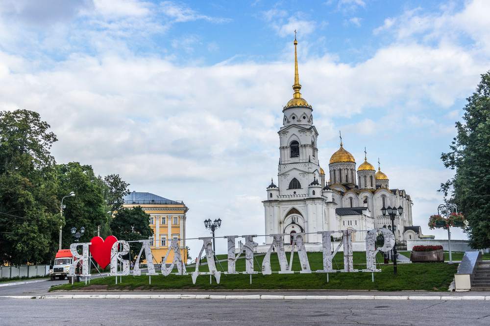
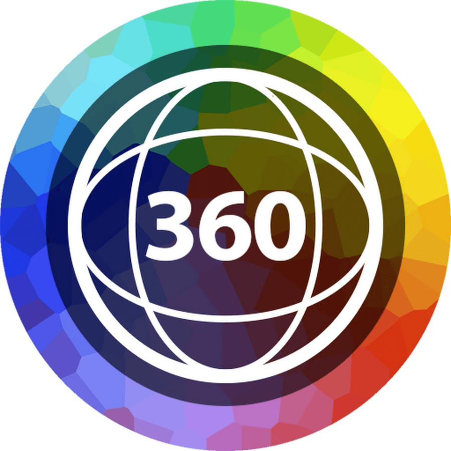

Владимир

Владимир — город, некогда бывший столицей Древнерусского государства. Владимир привлекает туристов архитектурными шедеврами русского белокаменного зодчества, богатой историей и необычными музеями. Город входит в самый популярный туристический маршрут нашей страны — «Золотое кольцо», его исторические объекты включены в Список всемирного наследия ЮНЕСКО. Древний город Владимир, расположенный на реке Клязьма, отражает историю средневековой России. После упадка Киева он на некоторое время стал столицей России, прежде чем его сменила Москва. Здесь жили великий князь и митрополит. Во Владимире расположено несколько важных памятников русского средневековья, но много и современных достопримечательностей.
Достопримечательности
Богородице-Рождественский мужской монастырь
Первое упоминание о монастыре в летописях датируется 1191 годом. Основатель святой обители — Всеволод Большое Гнездо. На протяжении полутора веков (до основания Троице-Сергиевой лавры) это был главный центр монашеской жизни в северо-восточной части Руси. Одна из древнейших русских летописей, Лаврентьевская, происходит именно из Богородице-Рождественского монастыря.
Дмитриевский собор
Дмитриевский собор также был основан Всеволодом Большое Гнездо в 1191 году. Но, в отличие от построек Богородице-Рождественского монастыря, уцелел и сохранился до наших дней. Белокаменный крестово-купольный храм, прежде всего, знаменит резьбой со внешней стороны стен. Собор украшен 600 рельефами с изображениями различных животных: как реальных, так и мифических. Во внутреннем убранстве собора сохранились фрагменты фресок XII века.
Палаты и парк «Липки»
В здании Присутственных палат сейчас размещается музейный комплекс, а в давние времена заседала губернская администрация. В залах Присутственных палат располагается несколько выставок: детские экспозиции на первом этаже; выставка «Минувших дней очарованье…», посвященная усадьбам региона; произведения русской живописи — от средневековых шедевров до современных творений региональных художников. Собор окружает живописная парковая зона — «Липки».
Успенский собор
Основанный князем Андреем Боголюбским в 1158 году, выдающийся памятник белокаменного зодчества Руси периода до монгольского вторжения является главным храмом Владимирской митрополии. Столетия назад именно здесь венчались на княжество правители Владимира и Москвы. Помимо насыщенной истории и впечатляющего внешнего вида, собор примечателен и внутренним убранством. Это один из немногих храмов Руси, в котором сохранились фрески Андрея Рублева.
Патриарший сад и окрестности
Но можно увидеть и другой, нетуристический, Владимир: деревянные избы с огородами, тихие улочки с котами, греющимися на солнце. Недалеко от входа в Патриарший сад расположено несколько интересных скульптур: памятник Владимирской вишне, Коту Ученому, Пожарному и Пожарной машине. Здесь же расположено несколько церквей: Никольская и Спасская, а также часовня 2000-летия христианства.
Золотые ворота
Ворота были построены в 1164 году при князе Андрее Боголюбском. Первоначальное предназначение ворот — оборонительное. Но также они использовались и как Триумфальная арка. Это был парадный вход в княжеско-боярскую часть города. Помимо Золотых, во времена правления Андрея Боголюбского, в городе было еще 6 ворот. Но до наших дней сохранились лишь парадные Золотые ворота. Сейчас, внутри надвратной церкви располагается экспозиция Владимиро-Суздальского музея-заповедника.
Соборная площадь и парк им. А. С. Пушкина
Успенский собор окружает уютная парковая зона с несколькими значимыми для города памятниками.
- Памятник князю Владимиру.
Памятник был открыт в 2007 году, 850 лет спустя после переноса столицы Владимиро-Сузальского княжества из Суздаля во Владимир.
- Памятник Андрею Рублеву.
Скульптура иконописца была установлена перед главным входом в парк в 1995 году. Андрей Рублев изображается в момент написания иконы.
- Памятник «850 лет Владимиру»
Монумент в стиле соцреализма был возведен в середине прошлого столетия. Он представляет собой каменную стелу с тремя фигурами из бронзы. Фигуры — олицетворение прошлого и настоящего города.
Музеи

Исторический музей Владимира
Городской исторический музей размещается в центре города, в старинном здании из красного кирпича. Музейные коллекции знакомят посетителей с многовековой историей Владимира. Гости увидят макет средневекового Владимира периода до нашествия монгольского ига. Наиболее ценная коллекция — клад из церковных реликвий и серебряных украшений, который был спрятан от монголов в 1238 году.
Музей «Старый Владимир»
Музей размещается в старинной водонапорной башне у Козлова вала. Постройка в неорусском стиле из красного кирпича была возведена в 1860 году. Внутри посетители погружаются в атмосферу губернского города конца XIX столетия. В коллекции музея «Старый Владимир»: архивные фотоснимки города, газеты и афиши того периода. Экспозиция располагается на трёх этажах, на четвертом находится смотровая площадка.
Музей «Хрусталь. Лаковая миниатюра. Вышивка»
Музей расположился в здании старообрядческой церкви. Экспозиция музея «Хрусталь. Лаковая миниатюра. Вышивка», посвящена художественным промыслам Владимирской области. Помимо бытовых предметов, здесь экспонируются настоящие произведения искусства. Например, композиция из стекла «Воспоминание о Венеции».
Музей пряника
Устав от исторических экспозиций, стоит заглянуть в интерактивный музей пряника. Помимо экскурсии с рассказом об истории пряничного дела, гостей ждут мастер-класс по росписи пряника и дегустация «Царского печатного пряника». Также можно заказать мастер-класс по лепке «Поморских козуль» — изделия из ржаного теста, выполненные своими руками, считаются оберегом.